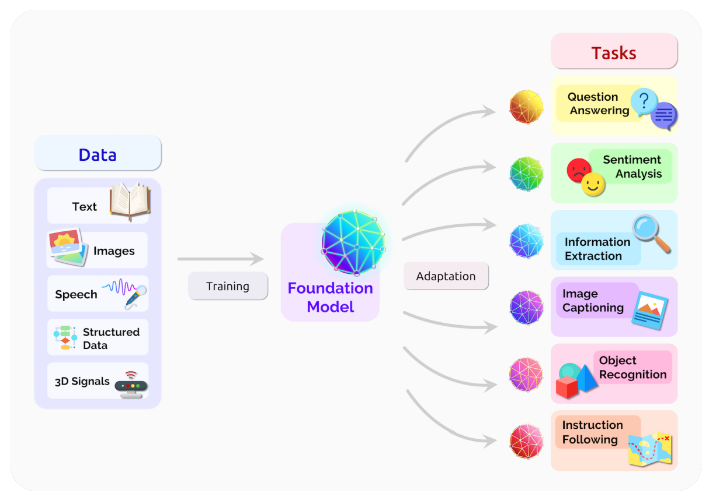
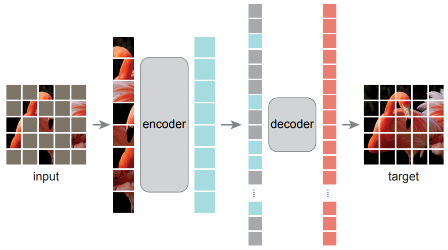

The rise of the foundation model paradigm
-
The “foundation model” approach
-
Pretrain models on pretext tasks, without supervision, on very large datasets.
- Adapt the pretrained models to downstream tasks.
-
Pretrain models on pretext tasks, without supervision, on very large datasets.

